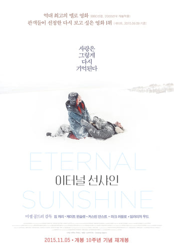

이터널 선샤인

2004 | 드라마 | 미국
미셸 공드리 감독
조엘은 아픈 기억만을 지워준다는 라쿠나사를 찾아가 헤어진 연인 클레멘타인의 기억을 지우기로 결심한다.
기억이 사라져 갈수록 조엘은 사랑이 시작되던 순간, 행복한 기억들, 가슴 속에 각인된 추억들을 지우기 싫어지기만 하는데...
이터널 선샤인이 개봉된지 약 15년이 지났지만, 아직까지도 최고의 로맨스 영화를 뽑으면 항상 이터널 선샤인은 빠지지 않습니다. 만남과 헤어짐의 반복을 어떤 책이나 영화보다 가장 사실적이고 현실적으로 표현한 아름다운 작품입니다.